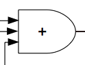

This is a halfway attempt to make pseudo random number generators for Intel AVX2 and AVX512F SIMD. The attemp is based on SFMT pseudo random number generators, which are generators for Intel SSE2 SIMD.
Good random number generator shoud meet three conditions:
Maximal period: SFMT PRNGs have variable period depends on seed, but they assure the periods are multiple of specified Mersenne Prime. This halfway attempt calculates parameters which give such periods.
Good randomness: Not supported. Some parameters may give so-so good score in BigCrush of TestU01, others may not. You can generate huge number of parameters and pick up good one.
High speed generation: Be expected. But you may be disappointed. Need to implement on AVX2 and AVX512F SIMD, and need to measure the time of random number generation.
The Idea is based on dSFMT PRNGs. The following figure shows the main part of dSFMT(Double precision SFMT).
shows 64bit width left SHIT(_mm_slli_epi64 in SSE2). The shift value is a parameter.
shows EXCLUSIVE OR(_mm_xor_si128 in SSE2). Need two instructions for this figure.
shows 64 bit width right logical SHIFT(_mm_srli_epi64). Ths shift value is 12 bit fixed.
shows logical AND(_mm_and_si128). The mask value is a parameter.
shows permutation of 32 bit unit(_mm_shuffle_epi32). The parameter is 0x1b.
The red arrow line shows the last step of one generation. one generation creates 128 bit(104 bit) random number(two double precision floating point numbers).
Changing word size from 128 bit to 256 bit will get following figure
shows permutation of 32 bit unit(_mm256_permutevar8x32_epi32). Use _mm256_permutevar8x32_epi32 as rotation of 32 bit unit and p1 is rotation size.
Changing word size from 128 bit to 512 bit will get following figure
shows permutation of 32 bit unit(_mm512_permutevar_epi32).
128 bit SFMT PRNG, integer generator, does not have small loop using lung. Good randomness is expected by using small loop, let's try to design integer generator using small loop.
Source Programs are in GitHub. DevAVXPRNG